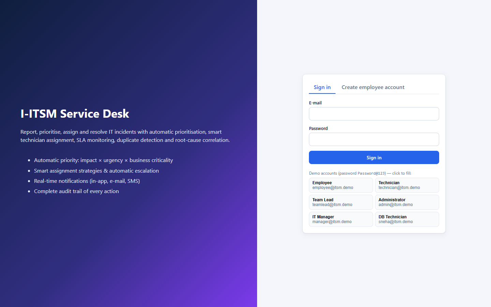
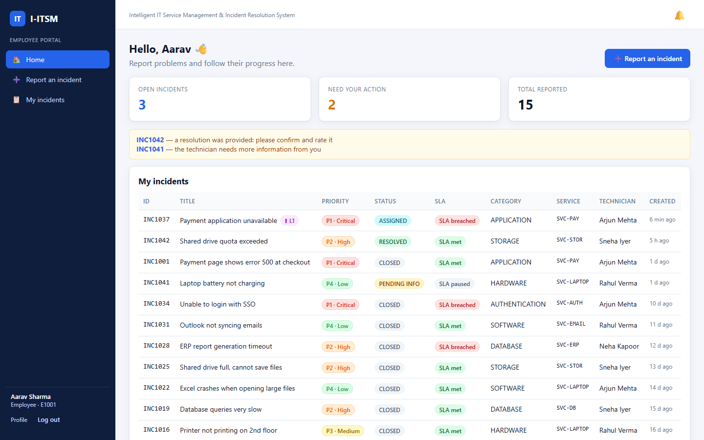
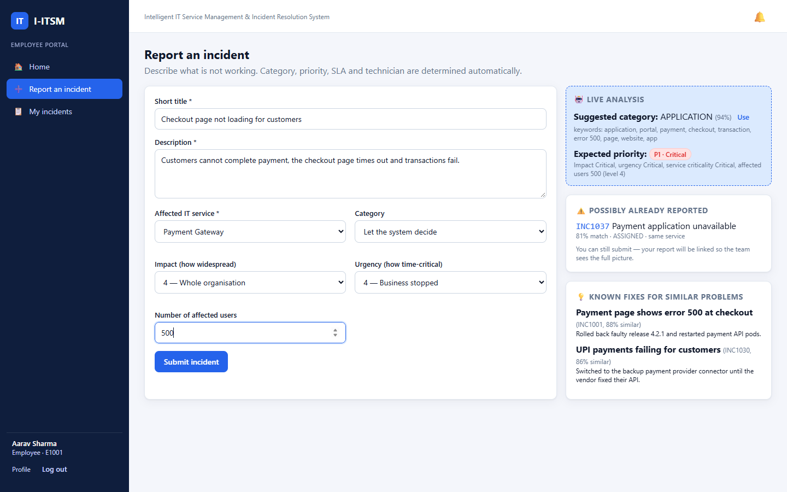
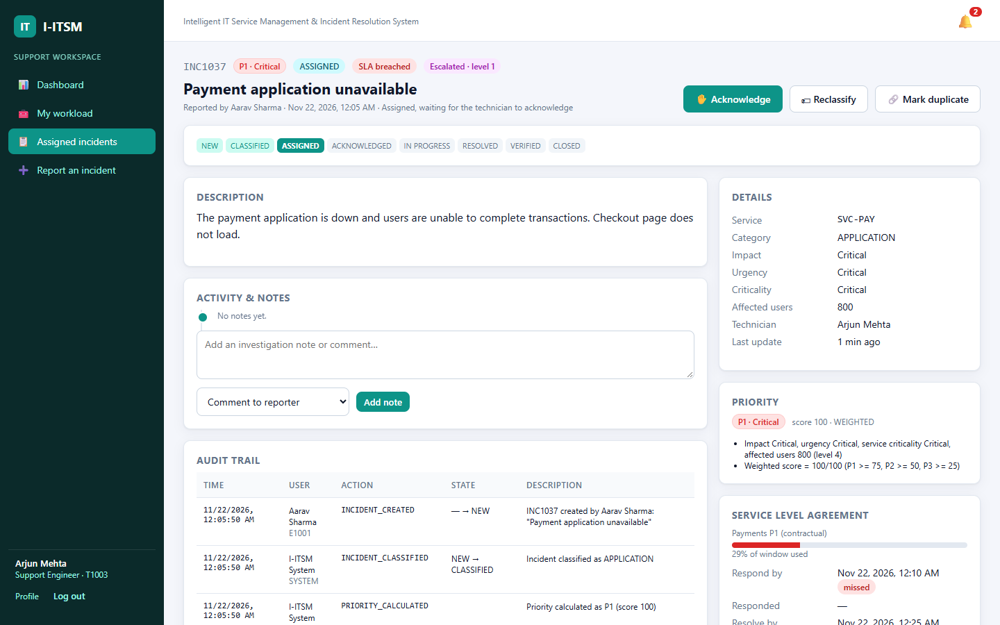
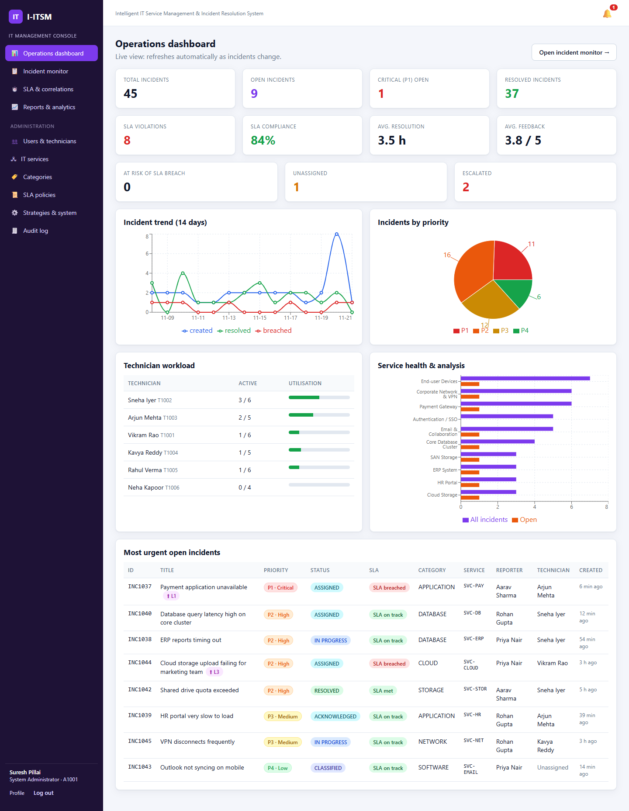
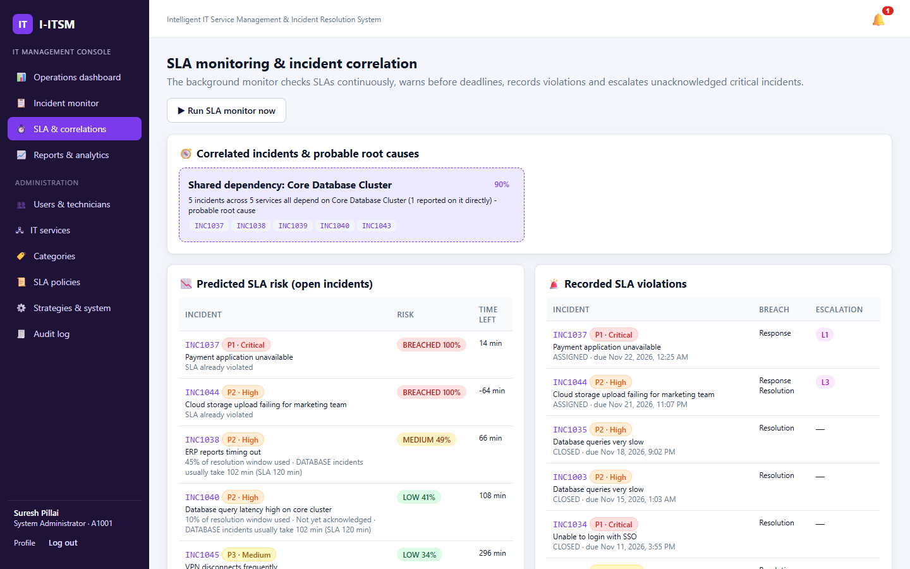
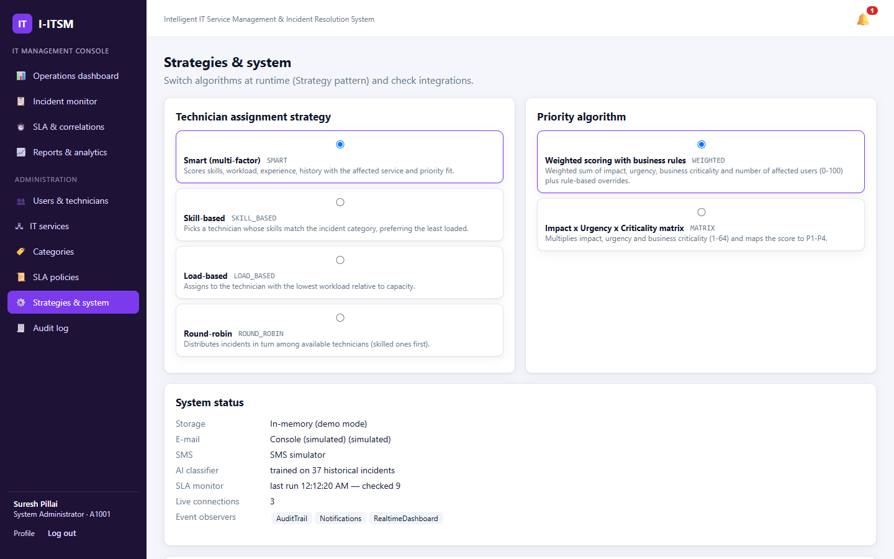
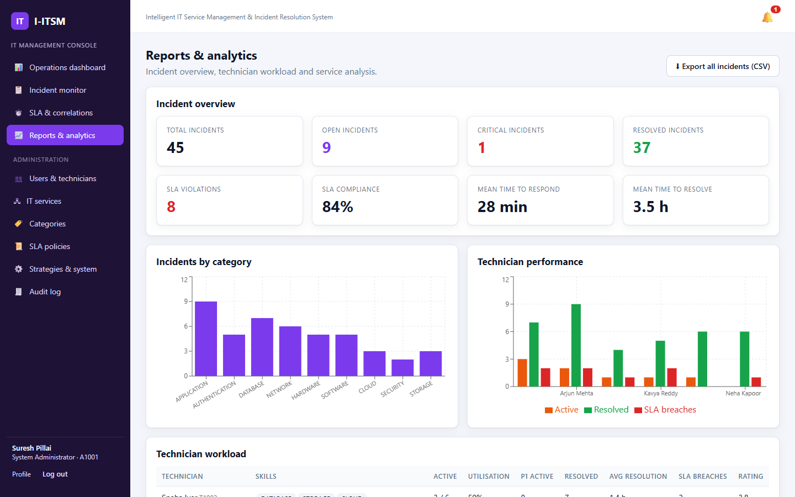

Group No. [Group No.]
| Member | ID | Primary responsibility |
|---|---|---|
| Dhruv Chaudhary | [ID] | Domain model & OOP design, design patterns |
| [Member 2] | [ID] | Backend REST API, security (JWT, RBAC) |
| [Member 3] | [ID] | Database / persistence (MongoDB Atlas, repositories) |
| [Member 4] | [ID] | Frontend UI/UX (React portals, dashboards) |
| [Member 5] | [ID] | Intelligent features, testing, DevOps |
Source code: https://github.com/dhruv2402/I-ITSM
Stack: React + TypeScript · Node.js + Express + TypeScript · MongoDB Atlas · Gmail SMTP · Server-Sent Events · Jest
Organisations depend on IT services such as payment gateways, single sign-on, databases, networks and e-mail. When a service fails, employees must report the problem and the IT support team must identify, prioritise, assign, investigate, resolve and close it. At scale (hundreds of incidents per day) a manual process causes delayed responses, wrong priorities, overloaded or idle technicians, SLA violations, duplicate reports, lost history and no visibility of recurring problems.
| Stakeholder | Interest |
|---|---|
| Employees / customers | Report problems easily, know the status, get a fix quickly, give feedback. |
| Technicians / support engineers | A clear, prioritised queue; information needed to investigate; fair workload. |
| Team leads | Supervise the queue, (re)assign work, react to escalations. |
| System administrators | Configure services, categories, SLA policies, strategies, users; audit. |
| IT manager | Service health, SLA compliance, workload and trend reports; last escalation level. |
| Business service owners | Contractual SLAs for critical services (e.g. payments). |
| Challenge | How I-ITSM addresses it |
|---|---|
| Delayed response | Automatic classification, prioritisation and assignment at creation time; real-time notifications; SLA monitor with warnings. |
| Incorrect prioritisation | Documented weighted priority algorithm (impact, urgency, business criticality, affected users) + business-rule overrides; admin can switch algorithm. |
| Inefficient technician allocation | Four interchangeable assignment strategies incl. a multi-factor smart strategy; workload limits; availability. |
| SLA violations | Per-priority and per-service SLA policies, deadline tracking, warnings, breach recording, predictive SLA risk, automatic escalation. |
| Poor visibility | Live operations dashboard (SSE), service health, reports, CSV export. |
| Duplicate reports | TF-IDF duplicate detection with linking; same-reporter resubmission rule. |
| Incomplete history | Immutable audit trail generated by an Observer for every domain event. |
| Recurring problems | Correlation over a service dependency graph (probable root cause), resolution recommender from history. |
A full-stack web application (React SPA + Node.js/Express REST API + MongoDB Atlas) built around a rich, object-oriented domain model. The Incident aggregate enforces its lifecycle through the State pattern; algorithms are pluggable Strategies; side effects (audit, notifications, live dashboard) are decoupled through an Observer event bus; persistence is hidden behind Repositories; external providers are wrapped by Adapters; objects are built by Factories; everything is wired in one composition root.
| ID | Requirement | Implemented in |
|---|---|---|
| FR1 | Register / log in; JWT session; change password | AuthService, /auth/* |
| FR2 | Report an incident (title, description, service, category optional, impact, urgency, affected users) | IncidentService.create |
| FR3 | Automatic classification (AI suggestion) and manual reclassification | CategoryClassifier, Incident.classify |
| FR4 | Automatic priority P1–P4 from impact, urgency, business criticality, affected users, service | PriorityCalculator + strategies |
| FR5 | Determine applicable SLA (service-specific, else default) and compute deadlines | SlaService, SlaTracker |
| FR6 | Identify suitable technicians and assign automatically; manual (re)assignment with recommendations | AssignmentStrategyRegistry, /assign, /recommendations |
| FR7 | Lifecycle actions: acknowledge, start, investigation notes, request/provide info, resolve, verify, reopen, close | Incident + State pattern |
| FR8 | Feedback (1–5 stars) after resolution | Incident.submitFeedback |
| FR9 | Notifications on important events through ≥2 mechanisms (in-app, e-mail, SMS) | NotificationSubscriber, channels |
| FR10 | SLA monitoring: response/resolution tracking, warnings, violation detection & recording | SlaMonitor (background) |
| FR11 | Automatic escalation Technician → Team Lead → Administrator → IT Manager | EscalationService |
| FR12 | Complete audit trail (timestamp, user, action, incident, previous/new state, description) | AuditTrailSubscriber |
| FR13 | Search/filter by ID, keywords, date range, status, priority, category, service, technician, SLA status, escalation | IncidentSpecification, /incidents |
| FR14 | Reports: overview, technician workload, service analysis, trends, SLA violations/risk, CSV export | ReportService |
| FR15 | Admin: users & technicians, IT services & dependencies, categories, SLA policies, strategies, audit, notification log | UserService, CatalogService, SettingsService |
| FR16 | Intelligent features: duplicates, correlation/root cause, escalation, smart recommendation, SLA risk, categorisation, suggested resolution | intelligence/* |
| FR17 | Technician workload view and availability toggle | /technicians/me/* |
| Category | Requirement |
|---|---|
| Maintainability | Layered architecture; business rules only in the domain; dependencies on interfaces; one composition root. |
| Extensibility | New category / SLA policy / service = data, no code. New assignment or priority algorithm, notification channel, e-mail provider or database = one new class implementing an interface. |
| Security | bcrypt password hashing, JWT (HS256, 8 h), role + ownership authorisation, input validation (zod), helmet headers, CORS, login rate-limit, CSV-injection guard. |
| Performance | Indexed MongoDB queries for search; API responses < 300 ms for typical data volumes; background SLA monitor runs every 30 s without blocking requests. |
| Reliability | A failing observer (e.g. e-mail outage) never breaks the business operation; DB errors mapped to DatabaseError; graceful degradation for missing SLA configuration. |
| Usability | Separate, colour-coded portals per user type; live analysis while typing; real-time toasts; responsive layout. |
| Testability | In-memory repositories and a controllable clock allow deterministic unit/integration tests. |
| Auditability | Every state change and configuration change is recorded and immutable. |
| Role | Class | Main permissions |
|---|---|---|
| Employee | Employee | INCIDENT_CREATE, INCIDENT_VIEW_OWN (+ reporter actions: add info, verify, reopen, feedback) |
| Technician | Technician | + INCIDENT_VIEW_ASSIGNED, INCIDENT_WORK, INCIDENT_CLOSE |
| Team Lead | TeamLead extends Technician | + INCIDENT_VIEW_ALL, INCIDENT_ASSIGN, REPORT_VIEW |
| Administrator | Administrator | VIEW_ALL, ASSIGN, CLOSE, UPDATE_ANY, USER_MANAGE, CONFIG_MANAGE, REPORT_VIEW, AUDIT_VIEW |
| IT Manager | Manager extends Administrator | + REPORT_EXPORT; final escalation level |
TechnicianUnavailable, WorkloadExceeded).DUPLICATE_INCIDENT (unless explicitly confirmed).We chose a layered architecture (the first option in the brief) deployed as a single Node.js process that serves both the REST API and the built React app, with MongoDB Atlas as a managed cloud database. Dependencies point inwards: controllers → application services → domain; infrastructure (MongoDB, SMTP, SSE) implements interfaces owned by the inner layers.
flowchart TB
subgraph Client["Browser - React SPA (TypeScript, Vite)"]
EP["Employee portal"]
TW["Support workspace (Technician / Team Lead)"]
AC["IT management console (Admin / Manager)"]
end
Client -- "REST/JSON + JWT" --> API
Client -. "Server-Sent Events (live notifications)" .- RT
subgraph Server["Node.js + Express (TypeScript)"]
API["API layer: router, zod validation, auth + RBAC middleware, error handler"]
SVC["Application services: IncidentService, AuthService, UserService, CatalogService, SettingsService, ReportService, IncidentAccessPolicy"]
DOM["Domain model: User hierarchy, Incident aggregate, IncidentState, SlaTracker, SlaPolicy, ItService, Category, DomainEvent"]
STR["Strategies: priority + assignment"]
INT["Intelligence: classifier, duplicates, correlation, recommender, SLA risk"]
BUS["EventBus (Observer)"]
OBS["Observers: AuditTrail, Notifications, RealtimeDashboard"]
MON["SlaMonitor + EscalationService (background job)"]
REPO["Repository interfaces"]
RT["RealtimeHub (SSE)"]
API --> SVC --> DOM
SVC --> STR
SVC --> INT
SVC --> REPO
SVC --> BUS --> OBS
MON --> REPO
MON --> BUS
OBS --> RT
end
REPO --> MONGO[("MongoDB Atlas")]
OBS -- "Adapter: nodemailer" --> GMAIL["Gmail SMTP"]
OBS -- "Adapter" --> SMS["SMS gateway (simulated)"]
The React form calls POST /api/incidents. The router validates the body with zod, the auth middleware resolves the JWT to a User object, and IncidentService.create orchestrates: create Incident → classify → calculate priority (strategy) → attach SLA → detect duplicates → choose technician (strategy) → save (repository) → publish domain events. Observers then write the audit trail, send notifications (in-app via SSE, e-mail via Gmail adapter, SMS for critical events) and push a live refresh to all dashboards.
flowchart LR
E(("👤 Employee"))
T(("👤 Technician"))
L(("👤 Team Lead"))
A(("👤 Administrator"))
M(("👤 IT Manager"))
S(("⏱ SLA Monitor (system)"))
subgraph SYS["I-ITSM"]
U1(["Register / Login"])
U2(["Report incident"])
U3(["Track status / view resolution"])
U4(["Add info / respond to request"])
U5(["Verify & give feedback / reopen"])
U6(["View assigned queue & workload"])
U7(["Acknowledge & investigate"])
U8(["Add notes / request info"])
U9(["Resolve / close incident"])
U10(["Assign / reassign (recommendations)"])
U11(["Monitor incidents & SLA"])
U12(["Manage users & technicians"])
U13(["Configure services, categories, SLA, strategies"])
U14(["View reports & audit log"])
U15(["Detect duplicates & correlate"])
U16(["Send notifications"])
U17(["Escalate incident"])
end
E --- U1 & U2 & U3 & U4 & U5
T --- U1 & U6 & U7 & U8 & U9
L --- U10 & U11 & U14
L -. "is a" .-> T
A --- U10 & U11 & U12 & U13 & U14
M --- U14 & U11
M -. "is a" .-> A
S --- U17 & U16
U2 -. "include" .-> U15
U2 -. "include" .-> U16
classDiagram
class User {
<<abstract>>
#props: UserProps
+id: string
+name: string
+email: string
+role: Role
+isActive: boolean
#permissionSet()* Set~Permission~
+title()* string
+hasPermission(p: Permission) boolean
+isSupportStaff() boolean
+updateProfile(changes) void
+changePasswordHash(hash) void
+deactivate() void
+toSnapshot() UserSnapshot
+toPublic() PublicUser
}
class Employee {
+title() string
}
class Technician {
-extras: TechnicianExtras
+skills: string[]
+maxWorkload: number
+experienceYears: number
+isAvailable: boolean
+hasSkill(category) boolean
+canTakeMore(workload) boolean
+setAvailability(b) void
+updateTechnicalProfile(c) void
}
class TeamLead
class Administrator
class Manager
class UserFactory {
+create(snapshot)$ User
+idPrefix(role)$ string
}
class Permission {
<<enumeration>>
INCIDENT_CREATE
INCIDENT_WORK
INCIDENT_ASSIGN
USER_MANAGE
CONFIG_MANAGE
REPORT_VIEW
AUDIT_VIEW
}
User <|-- Employee
User <|-- Technician
Technician <|-- TeamLead
User <|-- Administrator
Administrator <|-- Manager
UserFactory ..> User : creates
User ..> Permission
permissionSet() and title.
classDiagram
class Incident {
-state: IncidentState
-sla: SlaTracker
-data: IncidentData
-pendingEvents: DomainEvent[]
+create(id, input)$ Incident
+fromSnapshot(s)$ Incident
+classify(code, actor, confidence) void
+applyPriority(assessment, actor) boolean
+attachSla(policy, actor) void
+assignTo(tech, actor, reason) void
+acknowledge(actor) void
+startWork(actor) void
+addNote(actor, text, type) WorkNote
+requestInfo(actor, question) void
+provideInfo(actor, answer) void
+resolve(actor, summary, rootCause) void
+verify(actor) void
+reopen(actor, reason) void
+close(actor, code) void
+submitFeedback(actor, rating, comment) void
+escalate(level, target, reason, actor) void
+linkRelated(ids, actor, reason, dup) void
+flagSlaWarning() boolean
+flagSlaBreaches() boolean
+slaStatus(now) SlaStatus
+availableActions() IncidentAction[]
+pullEvents() DomainEvent[]
}
class IncidentState {
<<abstract>>
+status: IncidentStatus
#transitions: Map
+next(action) IncidentState
+can(action) boolean
+isActive() boolean
+slaClockRunning() boolean
+allowsDetailEdits() boolean
+describe()* string
}
class NewState
class ClassifiedState
class AssignedState
class AcknowledgedState
class InProgressState
class PendingInfoState
class ResolvedState
class VerifiedState
class ClosedState
class IncidentStates {
-registry: Map$
+of(status)$ IncidentState
+transitionTable()$ Row[]
}
class SlaTracker {
-responseDueAt: Date
-resolutionDueAt: Date
-respondedAt: Date
-resolvedAt: Date
-pausedAt: Date
+start(policy, at)$ SlaTracker
+markResponded(at) void
+markResolved(at) void
+pause(at) void
+resume(at) void
+elapsedFraction(now) number
+status(now) SlaStatus
}
class WorkNote
class Resolution
class Feedback
class SlaPolicy {
+priority: Priority
+serviceId: string
+responseMinutes: number
+resolutionMinutes: number
+warningThresholdPct: number
}
class ItService {
+id: string
+businessCriticality: Level
+userBase: number
+dependsOn: string[]
}
class Category {
+code: string
+keywords: string[]
}
IncidentState <|-- NewState
IncidentState <|-- ClassifiedState
IncidentState <|-- AssignedState
IncidentState <|-- AcknowledgedState
IncidentState <|-- InProgressState
IncidentState <|-- PendingInfoState
IncidentState <|-- ResolvedState
IncidentState <|-- VerifiedState
IncidentState <|-- ClosedState
IncidentStates o-- IncidentState : flyweights
Incident --> IncidentState : current state
Incident *-- "0..1" SlaTracker
Incident *-- "*" WorkNote
Incident *-- "0..1" Resolution
Incident *-- "0..1" Feedback
SlaTracker ..> SlaPolicy : built from
Incident --> "1" ItService : affects
Incident --> "0..1" Category : classified as
Incident --> "1" Employee : reported by
Incident --> "0..1" Technician : assigned to
ItService o-- "*" ItService : depends on
classDiagram
class PriorityStrategy {
<<interface>>
+key: string
+calculate(input: PriorityInput) PriorityAssessment
}
class WeightedPriorityStrategy
class MatrixPriorityStrategy
class PriorityCalculator {
-strategies: Map
-activeKey: string
+use(key) void
+calculate(input) PriorityAssessment
}
PriorityStrategy <|.. WeightedPriorityStrategy
PriorityStrategy <|.. MatrixPriorityStrategy
PriorityCalculator o-- PriorityStrategy
class AssignmentStrategy {
<<interface>>
+key: string
+rank(ctx, candidates) RankedCandidate[]
+select(ctx, candidates) RankedCandidate
}
class AbstractAssignmentStrategy {
<<abstract>>
+select(ctx, candidates) RankedCandidate
+rank(ctx, candidates) RankedCandidate[]
#filterEligible(ctx, candidates) TechnicianCandidate[]
#order(ctx, eligible)* RankedCandidate[]
}
class SkillBasedStrategy
class LoadBasedStrategy
class RoundRobinStrategy {
-lastAssignedId: string
}
class SmartAssignmentStrategy
class AssignmentStrategyRegistry {
-strategies: Map
-activeKey: string
+use(key) void
+active() AssignmentStrategy
}
class TechnicianCandidate {
+technician: Technician
+activeWorkload: number
+resolvedForService: number
}
AssignmentStrategy <|.. AbstractAssignmentStrategy
AbstractAssignmentStrategy <|-- SkillBasedStrategy
AbstractAssignmentStrategy <|-- LoadBasedStrategy
AbstractAssignmentStrategy <|-- RoundRobinStrategy
AbstractAssignmentStrategy <|-- SmartAssignmentStrategy
AssignmentStrategyRegistry o-- AssignmentStrategy
AssignmentStrategy ..> TechnicianCandidate
classDiagram
class EventBus {
-subscribers: EventSubscriber[]
+subscribe(s) void
+publish(event) void
}
class EventSubscriber {
<<interface>>
+name: string
+interestedIn(type) boolean
+handle(event) void
}
class AuditTrailSubscriber
class NotificationSubscriber
class RealtimeSubscriber
class NotificationService {
+notify(event, recipients) NotificationRecord[]
}
class NotificationFactory {
+createChannel(type) NotificationChannel
+createMessage(event, recipient) NotificationMessage
}
class ChannelSelectionPolicy {
<<interface>>
+channelsFor(type, priority) ChannelType[]
}
class PriorityBasedChannelPolicy
class NotificationChannel {
<<interface>>
+type: ChannelType
+deliver(message) DeliveryResult
}
class InAppChannel
class EmailChannel
class SmsChannel
class EmailGateway {
<<interface>>
+send(message) void
}
class GmailSmtpAdapter {
-transporter: nodemailer.Transporter
}
class ConsoleEmailAdapter
class SmsGateway {
<<interface>>
+send(phone, text) void
}
class SimulatedSmsGateway
class RealtimeHub {
+sendToUser(id, event, data) void
+broadcast(event, data) void
}
EventBus o-- EventSubscriber
EventSubscriber <|.. AuditTrailSubscriber
EventSubscriber <|.. NotificationSubscriber
EventSubscriber <|.. RealtimeSubscriber
NotificationSubscriber --> NotificationService
NotificationService --> NotificationFactory
NotificationService --> ChannelSelectionPolicy
ChannelSelectionPolicy <|.. PriorityBasedChannelPolicy
NotificationService o-- NotificationChannel
NotificationChannel <|.. InAppChannel
NotificationChannel <|.. EmailChannel
NotificationChannel <|.. SmsChannel
EmailChannel --> EmailGateway
EmailGateway <|.. GmailSmtpAdapter
EmailGateway <|.. ConsoleEmailAdapter
SmsChannel --> SmsGateway
SmsGateway <|.. SimulatedSmsGateway
InAppChannel --> RealtimeHub
RealtimeSubscriber --> RealtimeHub
NotificationChannel + one line in the factory.
classDiagram
class Repository~T~ {
<<interface>>
+findById(id) T
+findAll() T[]
+save(entity: T) T
+delete(id) boolean
}
class IncidentRepository {
<<interface>>
+search(criteria) Page
+findActive() Incident[]
+activeWorkload() Map
+nextId() string
}
class UserRepository {
<<interface>>
+findByEmail(email) User
+findByRoles(roles) User[]
}
class MongoRepository~T,S~ {
<<abstract>>
#model: Model
#toDomain(s: S)* T
#toSnapshot(e: T)* S
}
class InMemoryRepository~T,S~ {
<<abstract>>
#rows: Map
#toDomain(s: S)* T
#toSnapshot(e: T)* S
}
class MongoIncidentRepository
class MongoUserRepository
class InMemoryIncidentRepository
class InMemoryUserRepository
class IncidentSpecification {
-criteria: IncidentSearchCriteria
+isSatisfiedBy(incident, now) boolean
+apply(list) Page
}
Repository <|-- IncidentRepository
Repository <|-- UserRepository
Repository <|.. MongoRepository
Repository <|.. InMemoryRepository
MongoRepository <|-- MongoIncidentRepository
MongoRepository <|-- MongoUserRepository
InMemoryRepository <|-- InMemoryIncidentRepository
InMemoryRepository <|-- InMemoryUserRepository
IncidentRepository <|.. MongoIncidentRepository
IncidentRepository <|.. InMemoryIncidentRepository
UserRepository <|.. MongoUserRepository
UserRepository <|.. InMemoryUserRepository
MongoIncidentRepository ..> IncidentSpecification
InMemoryIncidentRepository ..> IncidentSpecification
classDiagram
class IncidentService {
+analyzeDraft(input) Analysis
+create(user, input) Result
+search(user, criteria) Page
+assign(user, id, techId) View
+acknowledge(user, id) View
+resolve(user, id, summary, cause) View
+close(user, id) View
+related(user, id) Related
+recommendTechnicians(user, id) Ranking
}
class IncidentAccessPolicy {
+canView(u, i) boolean
+assertAssignee(u, i) void
+assertCanAssign(u) void
+permittedActions(u, i) UserAction[]
}
class SlaService {
+resolvePolicy(serviceId, priority) SlaPolicy
}
class SlaMonitor {
+start(intervalMs) void
+runOnce() MonitorRunResult
}
class EscalationService {
+evaluate(incident) boolean
}
IncidentService --> IncidentAccessPolicy
IncidentService --> PriorityCalculator
IncidentService --> AssignmentStrategyRegistry
IncidentService --> SlaService
IncidentService --> CategoryClassifier
IncidentService --> DuplicateDetector
IncidentService --> ResolutionRecommender
IncidentService --> CorrelationEngine
IncidentService --> EventBus
IncidentService --> Repositories
SlaMonitor --> EscalationService
SlaMonitor --> EventBus
class AppError {
<<abstract>>
+httpStatus*: number
+code*: string
}
class ValidationError
class InvalidCredentialsError
class AuthenticationError
class AuthorizationError
class NotFoundError
class IncidentNotFoundError
class ServiceNotFoundError
class ConflictError
class InvalidStateTransitionError
class TechnicianUnavailableError
class WorkloadExceededError
class DuplicateIncidentError
class SlaConfigurationError
class DatabaseError
class ExternalServiceError
AppError <|-- ValidationError
AppError <|-- InvalidCredentialsError
AppError <|-- AuthenticationError
AppError <|-- AuthorizationError
AppError <|-- NotFoundError
NotFoundError <|-- IncidentNotFoundError
NotFoundError <|-- ServiceNotFoundError
AppError <|-- ConflictError
ConflictError <|-- InvalidStateTransitionError
ConflictError <|-- TechnicianUnavailableError
ConflictError <|-- WorkloadExceededError
ConflictError <|-- DuplicateIncidentError
AppError <|-- SlaConfigurationError
AppError <|-- DatabaseError
AppError <|-- ExternalServiceError
stateDiagram-v2 [*] --> NEW : report NEW --> CLASSIFIED : classify (auto / manual) CLASSIFIED --> CLASSIFIED : reclassify CLASSIFIED --> ASSIGNED : assign (strategy / manual) ASSIGNED --> ASSIGNED : reassign ASSIGNED --> ACKNOWLEDGED : acknowledge (response SLA met) ACKNOWLEDGED --> IN_PROGRESS : start ACKNOWLEDGED --> ASSIGNED : reassign IN_PROGRESS --> PENDING_INFO : requestInfo (SLA paused) PENDING_INFO --> IN_PROGRESS : provideInfo (SLA resumed) PENDING_INFO --> ASSIGNED : reassign IN_PROGRESS --> ASSIGNED : reassign IN_PROGRESS --> RESOLVED : resolve RESOLVED --> VERIFIED : verify / feedback RESOLVED --> IN_PROGRESS : reopen VERIFIED --> IN_PROGRESS : reopen VERIFIED --> CLOSED : close CLOSED --> [*]
InvalidStateTransitionError.sequenceDiagram actor Emp as Employee participant UI as React UI participant API as Express API participant IS as IncidentService participant INC as Incident participant CLF as CategoryClassifier participant PC as PriorityCalculator participant SLA as SlaService participant DD as DuplicateDetector participant AS as AssignmentStrategy participant R as IncidentRepository participant BUS as EventBus participant OBS as Observers Emp->>UI: fill form (live analysis) UI->>API: POST /api/incidents (JWT) API->>IS: create(user, input) IS->>INC: Incident.create() IS->>CLF: suggest(text, categories) IS->>INC: classify(code) IS->>PC: calculate(impact, urgency, criticality, users) IS->>INC: applyPriority(P1) IS->>SLA: resolvePolicy(service, P1) IS->>INC: attachSla(policy) IS->>DD: findDuplicates(draft, open incidents) IS->>AS: select(context, candidates) IS->>INC: assignTo(technician) IS->>R: save(incident) IS->>BUS: publishAll(incident.pullEvents()) BUS->>OBS: AuditTrail / Notifications / Realtime OBS-->>Emp: in-app + e-mail receipt OBS-->>UI: SSE push to technician (toast, SMS if P1) API-->>UI: 201 incident, duplicates, assignment
| Concept | Where and how it is applied |
|---|---|
| Encapsulation | All entity state is private/protected (e.g. Incident.data, Incident.state, Technician.extras, SlaTracker.s). Changes only through intention-revealing methods (acknowledge(), resolve(), setAvailability()) that enforce invariants; getters return copies of arrays (skills, notes). Password hashes never leave the backend (toPublic()). Repositories store deep-copied snapshots. |
| Abstraction | Complex operations hidden behind simple abstractions: IncidentService.create() hides a 9-step workflow; PriorityStrategy, AssignmentStrategy, NotificationChannel, EmailGateway, Repository<T> expose minimal contracts. Abstract classes User, IncidentState, AbstractAssignmentStrategy, AppError, MongoRepository. |
| Inheritance (true is-a) | Employee/Technician/Administrator are Users; TeamLead is a Technician (still works incidents) with supervision rights; Manager is an Administrator with export rights; concrete states are IncidentStates; specific errors are AppErrors. Not used where only behaviour varies — those use composition/strategies. |
| Polymorphism | user.hasPermission() dispatches to each subclass's permissionSet(); state.next(action) differs per state; strategy.select(); channel.deliver(); the error handler uses err.httpStatus of any AppError; repositories are swapped MongoDB ↔ in-memory without callers noticing. |
| Interfaces | PriorityStrategy, AssignmentStrategy, NotificationChannel, ChannelSelectionPolicy, EmailGateway, SmsGateway, EventSubscriber, Repository<T> and its 8 specialisations, Clock, SequenceGenerator. |
| Composition | Incident owns its SlaTracker, WorkNotes, Resolution, Closure, Feedback (created and destroyed with it). NotificationService is composed of channels, a factory and a policy; IncidentService is composed of strategies and intelligence components injected by the composition root. |
| Association / aggregation | Incident → reporter (Employee), → assigned Technician, → ItService, → Category (by id references, independent life-cycles). ItService aggregates upstream ItServices (dependency graph). EventBus aggregates subscribers; registries aggregate strategies. |
| Exception handling | Custom hierarchy of 16 exception classes (Section 11); domain throws, a single Express error handler translates; observers isolate failures; graceful degradation when SLA configuration is missing or e-mail fails. |
| Collections / data structures | Map for registries (O(1) lookup of strategies, states, repositories), Set for permissions/vocabulary/skills, arrays for ordered notes/history, Map<string,number> for workload and TF-IDF vectors, stack-based DFS with a visited Set over the dependency graph, sorted arrays for rankings, paging. |
| Generics | Repository<T>, MongoRepository<T,S>, InMemoryRepository<T,S>, Page<T>, useLoad<T> hook, typed api<T>() client. |
| SOLID | SRP (one reason to change per class), OCP (new strategies/channels/categories without modification), LSP (any repository/strategy substitutable), ISP (small interfaces), DIP (services depend on interfaces; concrete classes chosen only in container.ts). |
The brief requires at least two patterns; we implemented nine, each solving a concrete problem.
| Pattern | Classes | Problem solved / justification |
|---|---|---|
| Strategy | PriorityStrategy (Weighted, Matrix) + PriorityCalculator; AssignmentStrategy (Smart, Skill, Load, RoundRobin) + Registry; ChannelSelectionPolicy | Algorithms vary independently and must be switchable at runtime by the admin "without redesigning the application". Context classes hold the active strategy; the choice is persisted. |
| Template Method | AbstractAssignmentStrategy | All assignment strategies share the skeleton filter-eligible → order → pick; subclasses override only order() (and optionally filterEligible()). Removes duplicated eligibility logic. |
| State | IncidentState + 9 concrete states, IncidentStates registry | Lifecycle rules and per-state behaviour (SLA clock running, editable, active) live in state objects; illegal transitions are impossible; no switch statements in Incident. |
| Observer | EventBus, EventSubscriber, AuditTrailSubscriber, NotificationSubscriber, RealtimeSubscriber | Audit, notifications and live dashboards react to incident events without the incident workflow knowing about them; new reactions (e.g. Slack webhook) need no change in IncidentService. |
| Factory | UserFactory, NotificationFactory, Incident.create / SlaTracker.start (static factory methods) | Centralises which subclass represents a role (also used when an admin changes a role); builds channel objects and event-specific messages. |
| Repository | Repository<T> + MongoDB and in-memory implementations | Business code is independent of MongoDB; tests run without a database; storage technology can change. |
| Adapter | GmailSmtpAdapter (nodemailer), ConsoleEmailAdapter, SimulatedSmsGateway | Third-party APIs adapted to our EmailGateway/SmsGateway interfaces; switching provider = new adapter. |
| Specification | IncidentSpecification | Search criteria encapsulated as an object reused by both repositories (single definition of filtering, incl. time-dependent SLA status). |
| Dependency Injection / Composition Root | container.ts | All objects are wired in one place; enables swapping MongoDB ↔ memory and Gmail ↔ console for tests. |
| Flyweight / Singleton-like registry | IncidentStates | State objects are stateless and shared by all incidents. |
// State pattern - an illegal action is rejected by the current state object
next(action: IncidentAction): IncidentState {
const target = this.transitions[action];
if (!target) throw new InvalidStateTransitionError(this.status, action);
return IncidentStates.of(target);
}
// Strategy pattern - IncidentService does not know which algorithm runs
const strategy = this.d.assignment.active;
const chosen = strategy.select(this.context(inc), await this.buildCandidates(inc));
Inputs: impact (1 single user … 4 whole organisation), urgency (1 can wait … 4 business stopped), business criticality of the affected service (1–4, configured per service), number of affected users, and the service's user base.
Default – WeightedPriorityStrategy. Affected users are converted to a level: ≥500 users or ≥50 % of the user base → 4; ≥50 or ≥20 % → 3; ≥5 → 2; else 1. Then
weighted = 0.35·Impact + 0.30·Urgency + 0.20·Criticality + 0.15·UsersLevel (1..4)
score = round((weighted − 1) / 3 × 100) (0..100)
P1 ≥ 75, P2 ≥ 50, P3 ≥ 25, otherwise P4
Rule overrides: Impact 4 on criticality-4 service ⇒ P1; ≥500 users ⇒ at least P2;
Urgency 4 on criticality ≥3 service ⇒ at least P2
Rationale. Impact and urgency are the ITIL drivers, so they carry 65 % of the weight. Business criticality captures that the same outage matters more on the payment gateway than on the HR portal. Affected users makes the score sensitive to scale, relative to the service size. A purely multiplicative formula can under-rate an extreme single factor (e.g. a total outage of a critical service with low declared urgency); the rule overrides provide safe floors. Every assessment stores a human-readable rationale shown in the UI.
Alternative – MatrixPriorityStrategy (from the brief): score = Impact × Urgency × Criticality (1–64); P1 ≥ 36, P2 ≥ 18, P3 ≥ 8, else P4. The admin can switch between them at runtime.
| Example | I | U | C | Users | Weighted score | Priority |
|---|---|---|---|---|---|---|
| Payment application unavailable | 4 | 4 | 4 | 800 / 2000 | 100 | P1 |
| ERP reports timing out | 3 | 3 | 3 | 40 / 400 | 62 | P2 |
| VPN disconnects (12 users) | 2 | 2 | 4 | 12 | 45 | P3 |
| Laptop battery not charging | 1 | 2 | 2 | 1 | 18 | P4 |
Every strategy receives candidates with live facts (active workload, history with the service/category). Common eligibility (Template Method): active, marked available, workload < maximum.
| Strategy | Selection rule |
|---|---|
| Smart (default) | Score = 40·skill match + 25·(1 − load ratio) + 15·min(experience/10, 1) + 15·min(resolved on this service/5, 1) + 5 if senior (≥5 yrs) on P1/P2. Returns ranked, explained recommendations. |
| Skill-based | Only technicians whose skills contain the category; least loaded, then most experienced. |
| Load-based | Lowest utilisation (workload ÷ capacity); skill match breaks ties. |
| Round-robin | Rotates through eligible (skilled first) technicians ordered by id; keeps a cursor. |
If no technician is eligible, the incident stays CLASSIFIED, an ASSIGNMENT_FAILED event alerts team leads and admins, and it can be assigned manually later. Manual assignment checks TechnicianUnavailableError and WorkloadExceededError.
| Priority | Response target | Resolution target | Payment Gateway override |
|---|---|---|---|
| P1 | 5 min | 30 min | 5 min / 20 min |
| P2 | 15 min | 2 h | 10 min / 60 min |
| P3 | 1 h | 8 h | — |
| P4 | 4 h | 24 h | — |
SlaConfigurationError handled gracefully (incident created, admins alerted).SlaMonitor runs every 30 s (configurable), raises one warning per incident, records response/resolution breaches once, triggers escalation, saves and publishes events (audit + notifications).For P1/P2 incidents still in NEW/CLASSIFIED/ASSIGNED: level = ⌊minutes waiting ÷ response target⌋ capped at 3. Level 1 notifies the team lead(s), level 2 also administrators, level 3 also IT managers (in-app, e-mail and SMS). Escalation never changes the lifecycle state; it raises visibility and is recorded in the audit trail.
The brief requires two; we implemented all seven suggested features (A–G), all explainable and without external ML services.
| Feature | Technique | Where visible |
|---|---|---|
| A. Duplicate detection | NLP pipeline (tokenise, stop words, stemming, IT synonym normalisation e.g. unavailable/down/outage → outage, failing/unable/cannot → fail, transaction/checkout/UPI → payment) + TF-IDF cosine similarity. score = 0.65·text + 0.35·same service; threshold 0.5 over open incidents of the last 72 h. Links both incidents and notifies team leads. | Live warning on the report form; "Linked / possible duplicates" on the incident; DUPLICATE_DETECTED in audit. |
| B. Incident correlation & root cause | Groups open incidents (4 h window) on the same service. For root cause, traverses the service dependency graph (DFS, cycle-safe): an upstream service that has its own open report and, within ±90 min of that report, incidents on downstream services (≥3 incidents across ≥3 services in total) is flagged as the probable root cause. Requiring a direct report plus time proximity prevents generic dependencies (the network, which everything depends on) from "explaining" unrelated incidents; overlapping weaker explanations are pruned. | SLA & correlations page; incident intelligence panel. |
| C. Automatic escalation | Section 7.4, run by the background monitor. | Escalation badges, notifications, audit. |
| D. Smart technician recommendation | Weighted multi-factor scoring with reasons (Section 7.2). | Assign dialog (ranked list with explanations). |
| E. SLA risk prediction | risk = 0.5·time used + 0.2·lifecycle stage + 0.15·technician load + 0.15·historical difficulty (average resolution time of the category ÷ SLA window). LOW / MEDIUM / HIGH / BREACHED with reasons. | Technician dashboard, SLA centre. |
| F. Automatic categorisation | Hybrid: keyword evidence from admin-maintained category keywords (60 %) + multinomial Naive Bayes trained on historical incidents with Laplace smoothing (40 %). Retrained after every closure. New categories work immediately through keywords. | Live suggestion with confidence while typing; auto-classification on submit. |
| G. Suggested resolution | TF-IDF similarity against resolved incidents + same category/service bonus + feedback rating boost; top 3 previous fixes with root cause. | Report form ("Known fixes") and technician incident view. |
| Area | Technology | Purpose |
|---|---|---|
| Language | TypeScript 5 (frontend and backend) | Static typing, interfaces, abstract classes, access modifiers, generics, enums |
| Runtime | Node.js 22 LTS | Backend runtime |
| Web framework | Express 4 | REST API routing and middleware |
| Database | MongoDB Atlas (cloud) + Mongoose 8 | Persistence, indexes, aggregation |
| Auth / security | jsonwebtoken, bcryptjs, helmet, cors, express-rate-limit, zod | JWT, password hashing, headers, CORS, brute-force protection, validation |
| Integration | nodemailer + Gmail SMTP | Real e-mail notifications (adapter) |
| Real time | Server-Sent Events | Live notifications and dashboard refresh |
| Frontend | React 18, React Router 6, Vite 6, Recharts | SPA, routing, build tooling, charts |
| Testing | Jest, ts-jest, Supertest, mongodb-memory-server | Unit, API integration and database tests |
| Tooling | Git/GitHub, tsx (dev runner), npm | Version control, development |
1. Why this programming language? TypeScript gives us the OOP constructs this course evaluates — interfaces, abstract classes and methods, private/protected/readonly, generics and enums — checked at compile time, while running on the very productive Node.js ecosystem. One language for frontend and backend means shared types and every member can read all of the code.
2. Why this frontend technology? React's component model fits three role-specific portals built from shared components (tables, badges, dialogs). Vite gives instant reloads; Recharts gives charts with little code; the result is a responsive SPA usable on desktop and mobile browsers.
3. Why this backend technology? Express is minimal and unopinionated, so our own domain model and patterns stay visible instead of being hidden by framework conventions; its middleware model fits authentication, RBAC, validation and central error handling. Node's event loop handles many concurrent SSE connections and the background SLA monitor efficiently.
4. Why this database? Incidents are naturally document-shaped aggregates (notes, SLA tracker, resolution, feedback embedded), so MongoDB stores an aggregate in one document and loads it in one read — matching our aggregate/Repository design. Atlas is a managed cloud service (backups, monitoring, free tier) reachable from any demo machine. Indexes on status, priority, category, service, technician, reporter and date support the search criteria.
5. Why this architecture? A layered monolith with clean boundaries is the simplest architecture that satisfies the requirements and is easy to demonstrate and test; the Repository/Adapter/Observer boundaries mean parts can later be extracted into services without rewriting business logic.
6. Alternatives considered. Spring Boot + PostgreSQL (strong OOP, but heavier setup and two languages); Django/FastAPI (fast, but weaker static typing for OOP demonstration); relational DB (would need 6–7 joined tables for one incident view); microservices (operational overhead unjustified for this scope); WebSockets instead of SSE (bidirectional not needed; SSE is simpler and works through proxies).
7. Advantages and limitations. Advantages: one language end-to-end, fast development, cloud database, real-time push, easy testing with in-memory repositories, single-command deployment. Limitations: TypeScript types are erased at runtime (we add zod validation at the boundary); MongoDB has no cross-document foreign keys (integrity enforced in services); in-process SLA monitor and SSE hub need coordination when scaled to several instances.
8. How the technology supports OOP. TypeScript classes, interfaces, abstract members, access modifiers, generics and enums map one-to-one to the UML diagrams in Section 4. Express middleware and Mongoose are used only in the outer layer; the domain is plain TypeScript classes, so all business logic is object-oriented and framework-independent.
9. Evolution with many more users. Run several stateless API instances behind a load balancer (JWT is stateless); move the SLA monitor to a single scheduled worker or queue (e.g. BullMQ/Redis) with leader election; replace the in-process EventBus with a message broker (Kafka/RabbitMQ) — observers become independent consumers; Redis pub/sub for SSE fan-out; MongoDB Atlas sharding and read replicas; push heavy analytics to pre-aggregated collections; containerise with Docker and deploy on Kubernetes with CI/CD. The interfaces already in place (Repository, EventSubscriber, EmailGateway) make these swaps local changes.
| Requirement | Implementation |
|---|---|
| Authentication | E-mail + password login; JWT (HS256, 8 h expiry, secret from environment); token verified on every request and the user re-loaded (deactivated users are rejected immediately). |
| Password protection | bcrypt hash (cost 10); password policy ≥8 chars with letter and digit; hashes never returned by the API; change-password requires the current password. |
| Role-based authorisation | Permissions per role class; requirePermission middleware for admin/report routes; service-level checks; ownership rules in IncidentAccessPolicy (employees only see their incidents, technicians only their assigned ones, only the assignee acknowledges, only the reporter verifies…). |
| Input validation | zod schemas whitelist and type-check every body/query (lengths, enums, ranges); domain constructors re-validate invariants; JSON body limit 100 kB. |
| Secure API access | helmet security headers, CORS restricted to the frontend origin, rate limiting on login/registration (20 per 15 min), generic login error (no account enumeration), 401/403 distinction. |
| Unauthorized operations | Self-registration only creates employees; admins cannot deactivate or demote themselves; illegal lifecycle moves rejected; CSV export guards against spreadsheet formula injection; MongoDB queries built from validated values only (no operator injection). |
| Secrets | Database URI, JWT secret and Gmail app password only in .env (git-ignored); .env.example documents them. |
| Not implemented (documented) | HTTPS termination (provided by hosting), refresh tokens / token revocation list, MFA, account lockout policy, audit-log tamper evidence (hash chaining). |
All business errors extend the abstract AppError, which declares httpStatus and code. One Express error handler translates any of them polymorphically into {"error": {"code", "message", "details"}}; the React client shows the code and message.
| Situation (from the brief) | Exception | HTTP | Handling |
|---|---|---|---|
| Invalid login | InvalidCredentialsError | 401 | Generic message; rate limited |
| Unauthorized operation | AuthorizationError / AuthenticationError | 403 / 401 | Client redirects to login on expired token |
| Invalid incident | IncidentNotFoundError | 404 | |
| Invalid state transition | InvalidStateTransitionError | 409 | Thrown by the State object; UI only offers legal actions |
| Technician unavailable | TechnicianUnavailableError | 409 | Auto-assignment skips them; incident queued |
| Technician workload exceeded | WorkloadExceededError | 409 | Shows current/max |
| Service not found | ServiceNotFoundError | 404 | |
| Missing SLA configuration | SlaConfigurationError | 422 | Caught in IncidentService: incident still created, SLA_MISSING event alerts admins |
| Duplicate incident | DuplicateIncidentError | 409 | UI offers "different problem — submit anyway" |
| Database failure | DatabaseError | 503 | All Mongo calls wrapped by guard() |
| Network failure | ExternalServiceError (server) / NETWORK_FAILURE (client) | 502 | E-mail failures logged as FAILED deliveries without breaking the operation; client shows "cannot reach server" |
| Invalid user input | ValidationError | 400 | Field-level details from zod |
erDiagram
USERS ||--o{ INCIDENTS : "reports (reporterId)"
USERS |o--o{ INCIDENTS : "is assigned (assignedTechnicianId)"
SERVICES ||--o{ INCIDENTS : "affected (serviceId)"
CATEGORIES |o--o{ INCIDENTS : "classifies (categoryCode)"
SERVICES |o--o{ SLA_POLICIES : "overrides (serviceId, null = default)"
SERVICES }o--o{ SERVICES : "dependsOn"
INCIDENTS ||--o{ AUDIT_RECORDS : "history (incidentId)"
USERS ||--o{ AUDIT_RECORDS : "performed (userId)"
USERS ||--o{ NOTIFICATIONS : "receives (userId)"
INCIDENTS |o--o{ NOTIFICATIONS : "about (incidentId)"
INCIDENTS }o--o{ INCIDENTS : "relatedIncidentIds / duplicateOfId"
USERS {
string _id PK "E1001, T1003, A1001"
string name
string email UK
string passwordHash
string role
string phone
string department
boolean active
string_array skills "technicians"
int maxWorkload
int experienceYears
boolean available
}
INCIDENTS {
string _id PK "INC1037"
string title
string description
string reporterId FK
string serviceId FK
string categoryCode FK
int impact
int urgency
int businessCriticality
int affectedUsers
string priority
int priorityScore
string status
string assignedTechnicianId FK
object sla "embedded SlaTracker"
array notes "embedded WorkNotes"
object resolution
object closure
object feedback
int escalationLevel
date createdAt
}
SERVICES {
string _id PK "SVC-PAY"
string name
int businessCriticality
int userBase
string_array dependsOn
boolean active
}
CATEGORIES {
string _id PK "NETWORK"
string name
string_array keywords
boolean active
}
SLA_POLICIES {
string _id PK
string priority
string serviceId FK
int responseMinutes
int resolutionMinutes
int warningThresholdPct
boolean active
}
AUDIT_RECORDS {
string _id PK
date timestamp
string userId FK
string action
string incidentId FK
string previousState
string newState
string description
}
NOTIFICATIONS {
string _id PK
string userId FK
string channel
string eventType
string incidentId FK
string title
string status
boolean read
date createdAt
}
settings key/value, counters for readable ids)counters collection (findOneAndUpdate $inc).$match active statuses → $group by technician), not stored, so it can never be inconsistent.| Collection | Records | Examples |
|---|---|---|
| users | 11 | E1001 Aarav Sharma (employee), T1003 Arjun Mehta (APPLICATION, SOFTWARE, AUTHENTICATION), T1006 Neha Kapoor (team lead), A1001 Suresh Pillai (admin), A1002 Anita Desai (IT manager) |
| services | 10 | SVC-PAY Payment Gateway (criticality 4, depends on SVC-DB, SVC-AUTH, SVC-NET); SVC-DB Core Database Cluster; SVC-HR HR Portal (criticality 2) |
| categories | 10 | HARDWARE, SOFTWARE, NETWORK, DATABASE, CLOUD, SECURITY, AUTHENTICATION, APPLICATION, STORAGE, GENERAL |
| sla_policies | 6 | 4 defaults from the brief + 2 Payment Gateway contractual policies |
| incidents | 45 | 36 historical (closed/verified, with resolutions and feedback, ~25 % SLA breaches) + 9 live demo incidents (INC1037 payment outage P1, INC1038–INC1040 correlated database problems, INC1044 breached & escalated) |
| audit_records | ~350 | Complete history for every seeded incident |
{ "_id": "INC1037", "title": "Payment application unavailable", "reporterId": "E1001", "serviceId": "SVC-PAY",
"categoryCode": "APPLICATION", "impact": 4, "urgency": 4, "businessCriticality": 4, "affectedUsers": 800,
"priority": "P1", "priorityScore": 100, "status": "ASSIGNED", "assignedTechnicianId": "T1003",
"sla": { "policyName": "Payments P1 (contractual)", "responseDueAt": "...+5 min", "resolutionDueAt": "...+20 min",
"respondedAt": null, "responseBreached": false, ... },
"notes": [], "escalationLevel": 0, "relatedIncidentIds": [] }
Automated tests: Jest with ts-jest. Unit tests exercise domain classes and algorithms with a controllable FixedClock; integration tests drive the real Express app through Supertest with in-memory repositories; a database test runs the MongoDB repositories against mongodb-memory-server. Run with npm test (coverage: npm run test:coverage). The full list of documented test cases with steps and expected results is in docs/TEST_CASES.md; the summary is below.
| ID | Type | Test case | Expected result |
|---|---|---|---|
| TC01 | Normal | Payment outage, I=4 U=4 C=4, 800 users | P1, score ≥ 75, rationale present |
| TC02 | Normal | Single user, low urgency, criticality-2 service | P4 |
| TC03 | Boundary | Matrix scores 36 / 27 / 8 / 6 | P1 / P2 / P3 / P4 exactly at thresholds |
| TC04 | Normal | Full lifecycle NEW → … → CLOSED | Status CLOSED; events created once |
| TC05 | Business rule | Close or resolve a NEW incident | InvalidStateTransitionError, state unchanged |
| TC06 | Invalid input | Title "abc"; impact 5 | ValidationError |
| TC07 | Boundary | SLA at 76 % of window, response overdue | One warning; response breach recorded |
| TC08 | Normal | Skill-based ranking | Only DATABASE-skilled techs, least loaded first |
| TC09 | Boundary | Technician at max workload / unavailable | Not eligible; workload max−1 still eligible |
| TC10 | Intelligent | "Payment transaction failing" vs open "Payment application unavailable" | Detected as duplicate, same service |
| TC11 | Intelligent | Category suggestion for password / wifi text; gibberish | AUTHENTICATION / NETWORK; no suggestion |
| TC12 | Intelligent | ERP, HR and DB incidents | Single shared-dependency cluster: root cause DB |
| TC13 | Business rule | Unacknowledged P1 after 6 and 16 min | Breach recorded, escalated to level 3, manager notified, e-mail sent |
| TC14 | Exception | Wrong password / unknown e-mail | 401 INVALID_LOGIN, identical message |
| TC15 | Authorization | Employee → admin users, reports, another person's incident; technician → settings | 403 each; employee search only own incidents |
| TC16 | Integration | Workflow 1+2 via API | Auto-classified AUTHENTICATION, prioritised, assigned, notified, closed; audit has previous/new states |
| TC17 | Exception | Resolve an unassigned CLASSIFIED incident | 409 INVALID_STATE_TRANSITION |
| TC18 | Integration | Workflow 3: second payment report | Duplicate of INC1037; SAME_SERVICE correlation |
| TC19 | Persistence | MongoDB seed, search, aggregation, id sequence | Round-trip intact; workload T1003 = 2; next id INC1046 |
| TC20 | Business rule | Same reporter submits identical incident twice | 409 DUPLICATE_INCIDENT |
| TC21 | Exception | Manual assign to unavailable / full technician | 409 TECHNICIAN_UNAVAILABLE / TECHNICIAN_WORKLOAD_EXCEEDED |
| TC22 | Invalid input | Invalid body; unknown service; unknown incident | 400 with field details; 404 SERVICE_NOT_FOUND; 404 |
| TC23 | Normal | Search with status + priority + service + sort; SLA status; keywords + technician | Only matching incidents |
| TC24 | Extensibility | Admin adds TELEPHONY category; duplicate / invalid SLA policy | Suggested immediately; 409; 400 |
| TC25 | Boundary | Feedback rating 0, 6, and before resolution | Rejected; 5 accepted and auto-verifies |
| TC26 | Business rule | SLA pause in PENDING_INFO for 60 min | Resolution deadline moves by 60 min |
| TC27 | Exception | All SLA policies deleted, new incident | Incident created without SLA; SLA_MISSING audited |
Results (21 Nov 2026): Test Suites: 7 passed, 7 total · Tests: 45 passed, 45 total (unit, API integration and MongoDB repository suites; the documented cases above map to named tests, plus additional edge-case tests). Bugs found and fixed during testing include a correlation false-positive (the network was blamed as root cause for unrelated incidents; fixed by requiring a direct report and time proximity) and duplicate suggestions of the same historical fix (deduplicated).
Three visually distinct portals (different colour identity, navigation and home page) as required ("difference in GUI for different users"):
| Portal | Users | Screens |
|---|---|---|
| Employee portal (blue) | Employee | Home with "needs your action" alerts; Report incident with live AI analysis (category, expected priority, possible duplicates, known fixes); My incidents (search); incident detail with lifecycle bar, notes, provide information, confirm & rate, reopen. |
| Support workspace (teal) | Technician, Team Lead | Dashboard with workload KPIs and SLA risk; My workload with availability toggle; queue; incident detail with acknowledge/start/request info/resolve, investigation notes, suggested resolutions, correlations; team lead: assign with smart recommendations, SLA centre, reports. |
| IT management console (purple) | Administrator, IT Manager | Operations dashboard (KPIs, 14-day trend, priority mix, technician workload, service health, urgent incidents); incident monitor with 12 filters and CSV export; SLA & correlation centre; reports; users & technicians; IT services & dependencies; categories; SLA policies; strategies & system status; notification log; audit log. |








Workflow 1 – Employee reports → system prioritises → technician assigned → notification generated. Employee reports "Checkout page not loading for customers" on the Payment Gateway (I=4, U=4, 500 users). Live analysis suggests APPLICATION and P1 and warns about INC1037. On submit: classified, P1, Payments P1 SLA (5/20 min), smart strategy assigns a skilled technician, in-app toast + Gmail e-mail + simulated SMS.
Workflow 2 – Technician investigates → SLA monitored → resolved → user notified. Technician acknowledges (response time recorded), starts, adds an investigation note, requests information (SLA paused), employee answers, technician applies a suggested resolution and resolves; employee is notified, confirms and rates; incident closed; full audit trail shown.
Workflow 3 – Multiple incidents → duplicates/related → correlated/escalated. Several payment reports are linked as duplicates; correlation shows ERP/HR/DB incidents sharing the Core Database Cluster as probable root cause; an unacknowledged P1 breaches its response SLA and escalates Technician → Team Lead → Admin → IT Manager (visible in notifications and SLA centre).
The detailed recording script is in docs/DEMO_VIDEO_SCRIPT.md.
| Member | Responsibilities | Main files |
|---|---|---|
| Dhruv Chaudhary | Domain model, OOP design, State/Factory patterns, UML | backend/src/domain/* |
| [Member 2] | REST API, authentication, RBAC, validation, error handling | backend/src/api/*, services/AuthService.ts, IncidentAccessPolicy.ts |
| [Member 3] | MongoDB Atlas, repositories, schema, seed data, ER diagram | backend/src/persistence/*, seed/* |
| [Member 4] | React UI/UX, dashboards, real-time notifications | frontend/src/* |
| [Member 5] | Strategies, intelligent features, SLA monitor, tests | backend/src/strategies/*, intelligence/*, sla/*, tests/* |
Every member is able to explain the overall flow (Section 3) and the patterns (Section 6).
CategoryClassifier/DuplicateDetector classes can be replaced behind the same interface).| Method & path | Role | Purpose |
|---|---|---|
| POST /api/auth/register, /login; GET /auth/me; POST /auth/change-password | any | Authentication |
| GET /api/services, /categories, /sla-policies, /lifecycle | logged in | Reference data |
| POST /api/incidents/analyze | logged in | Live AI analysis of a draft |
| POST /api/incidents; GET /api/incidents?filters; GET /incidents/:id; PATCH /incidents/:id | scoped | Create, search, view, update |
| POST /incidents/:id/classify | assign | acknowledge | start | notes | request-info | provide-info | resolve | verify | reopen | close | feedback | duplicate-of | per policy | Lifecycle actions |
| GET /incidents/:id/audit | related | recommendations | scoped | History, intelligence, technician ranking |
| GET /incidents/export.csv | REPORT_VIEW | CSV export |
| GET /technicians; GET /technicians/me/workload; PUT /technicians/me/availability | staff | Workload |
| GET /notifications; POST /notifications/:id/read, /read-all; GET /notifications/stream (SSE) | logged in | Notifications |
| GET /reports/overview | technicians | services | trend | sla-violations | sla-risk | correlations | REPORT_VIEW | Reports & analytics |
| /api/admin/users, services, categories, sla-policies, settings, audit, notifications, sla-monitor/run, system | Admin | Administration |
cd backend && npm install && copy .env.example .env (set MONGODB_URI, JWT_SECRET, SMTP_* ) npm run dev # API http://localhost:4000/api (auto-seeds an empty database) cd ../frontend && npm install && npm run dev # UI http://localhost:5173 npm test --prefix backend Demo password for all accounts: Password@123 (employee@, technician@, teamlead@, admin@, manager@itsm.demo)
| Rubric criterion | Evidence |
|---|---|
| System design & architecture (10) | Sections 1–4: problem analysis, layered architecture, 9 UML/ER diagrams |
| Functionality – MVP (60) | User mgmt (3+2 roles), incident CRUD + lifecycle, priority (impact/urgency/criticality), 4 assignment strategies, SLA calc/deadlines/violations, 3 notification mechanisms, complete audit, 12 search criteria + reports, 7 intelligent features, MongoDB persistence |
| User experience (10) | 3 distinct portals, live analysis, real-time toasts, SLA visualisation, security, runtime configuration |
| Technical depth (15) | TypeScript OOP, 9 patterns, Gmail API integration, MongoDB Atlas, SSE, background jobs, scalability plan |
| Testing & validation (5) | 27 documented cases; unit + API integration + DB tests; exception and edge cases |
| Innovation (10) | Section 14 – 10 items from the Innovation Challenge list |
| Documentation & presentation (10) | This report, README, test document, demo script |